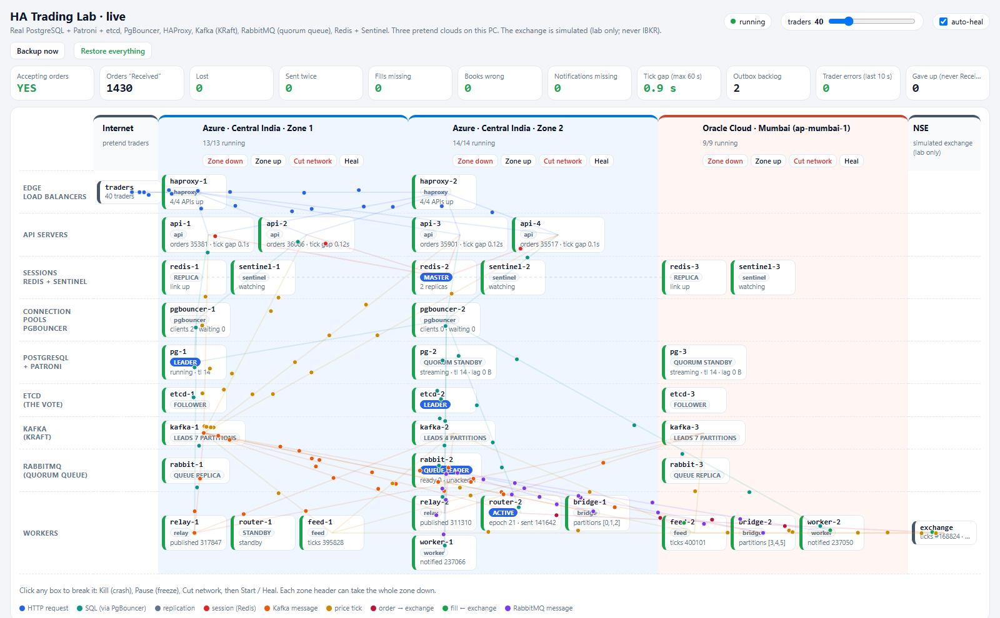
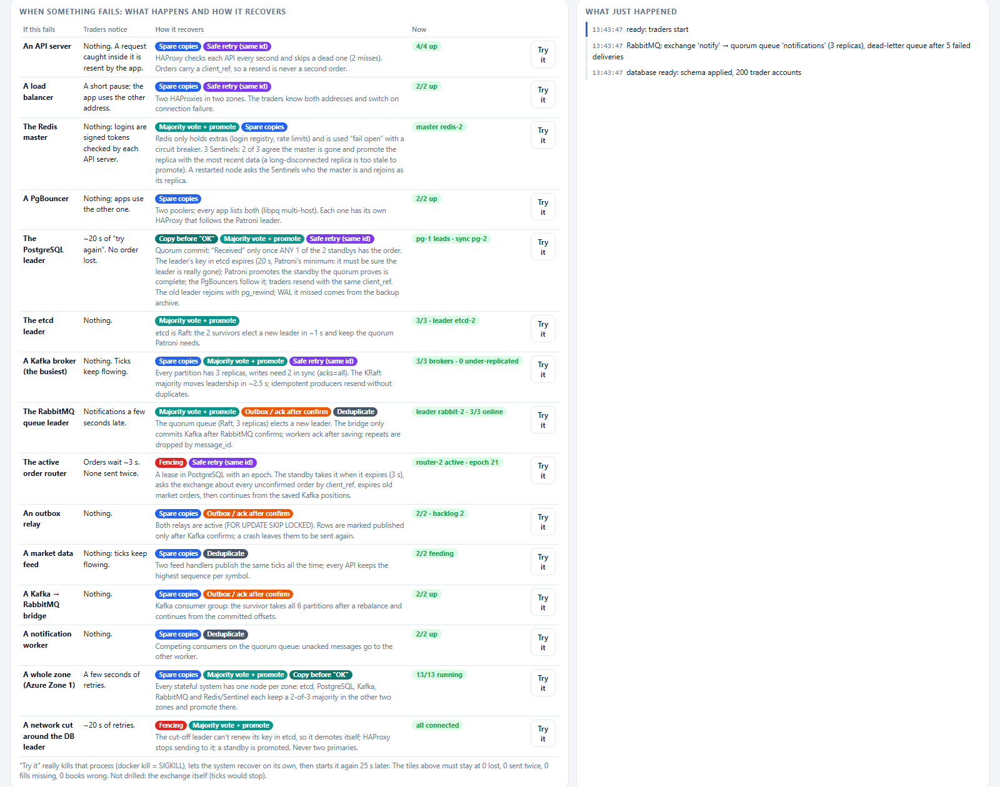
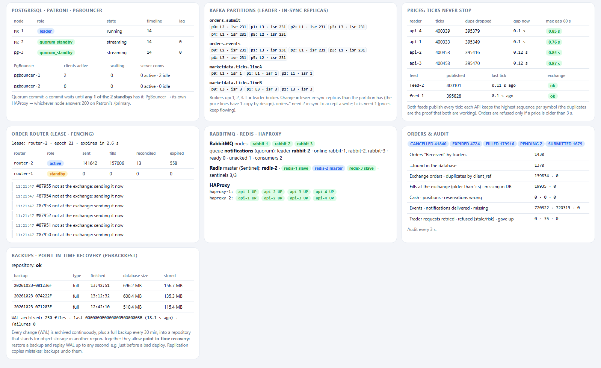

Everything about the HA Trading Lab, from beginning to end: what runs where and how it is configured, one real order traced through every service with measured timings, how each failure is handled, how to open, close and test it yourself, and a step-by-step plan to take it to real execution.
What this is: a working, failure-tolerant trading back end built from real software (PostgreSQL + Patroni + etcd, PgBouncer, HAProxy, Kafka, RabbitMQ, Redis + Sentinel). It runs in 38 Docker containers on one PC (Ubuntu on WSL 2) and is spread over three pretend clouds. You can switch any part off, or a whole zone, while pretend traders keep trading, and watch the system recover without losing or duplicating an order.
What this is not: connected to any real market. The exchange is simulated and exists only inside the lab. Nothing here talks to IBKR. The cloud names are made up; everything runs on one machine.
| Project folder | Windows D:\HA_Trading_Lab = Ubuntu /mnt/d/HA_Trading_Lab |
| Dashboard | http://127.0.0.1:9700 |
| Start / stop | docker compose up -d / docker compose down (in Ubuntu, in the project folder) |
| Live view in a terminal | bash scripts/watch.sh |
The exchange in the lab is simulated and exists only inside the lab; nothing in it connects to IBKR or any real market.
The same content is kept as Markdown in docs/HA_Trading_Lab_Guide.md; this PDF is generated from it by
docs/build_guide_pdf.py.
The rule behind the layout: every system that holds data or votes on a leader has one member in each of the three zones, so losing any one zone still leaves a majority of two. Every stateless part has at least two copies, in different zones.

The four paths through the system
| Path | Hops |
|---|---|
| Orders | trader → HAProxy → API → PgBouncer → PostgreSQL (order + outbox in one transaction) → relay → Kafka orders.submit → active router → exchange |
| Fills | exchange → active router → PostgreSQL (fill, cash, position, reservation) → outbox → relay → Kafka orders.events |
| Notifications | Kafka orders.events → bridge → RabbitMQ quorum queue notifications → worker → PostgreSQL notifications |
| Prices | exchange → feed-1 / feed-2 → Kafka marketdata.ticks.lineA / lineB → every API server's own price table |
All 38 run in Ubuntu's Docker as Compose project ha-lab on one network, ha-lab-backbone.
hal- prefix (HA Lab): hal-pg-1. You use these in Docker commands.pg-1. Services use these to reach each other (pg-1:5432).Only hal-control publishes a port: 127.0.0.1:9700.
| Container(s) | Zone | Image | Code / configuration | Port(s) inside | Data volume | Job |
|---|---|---|---|---|---|---|
hal-haproxy-1, -2 |
z1, z2 | haproxy:2.9-alpine | config/haproxy-edge.cfg |
8080 (traffic), 8404 (stats) | — | edge load balancers |
hal-api-1 … -4 |
z1 ×2, z2 ×2 | ha-lab-app | app/api.py |
8000 | — | login, quotes, orders |
hal-pg-1, -2, -3 |
z1, z2, Oracle | ha-lab-postgres | images/postgres/ (patroni.yml, pgbackrest.conf) |
5432 (SQL), 8008 (Patroni REST) | pg-N, backup-repo |
the database: leader + 2 quorum standbys |
hal-etcd-1, -2, -3 |
z1, z2, Oracle | coreos/etcd:v3.5.15 | flags in docker-compose.yml |
2379, 2380 | etcd-N |
the vote for the database leader |
hal-pgbouncer-1, -2 |
z1, z2 | ha-lab-pgbouncer | images/pgbouncer/ |
6432 | — | connection pools that follow the database leader |
hal-kafka-1, -2, -3 |
z1, z2, Oracle | apache/kafka:3.8.0 | KAFKA_* settings in docker-compose.yml |
9092, 9093 | kafka-N |
message log: orders, events, prices |
hal-rabbit-1, -2, -3 |
z1, z2, Oracle | rabbitmq:3.13-management | config/rabbitmq.conf, config/rabbit-entry.sh |
5672, 15672 | rabbit-N |
notification job queue |
hal-redis-1, -2, -3 |
z1, z2, Oracle | redis:7.4-alpine | config/redis-entry.sh |
6379 | redis-N |
login registry, rate limits (optional extras) |
hal-sentinel-1, -2, -3 |
z1, z2, Oracle | redis:7.4-alpine | config/sentinel-entry.sh |
26379 | sentinel-N |
watch Redis, promote a replica |
hal-relay-1, -2 |
z1, z2 | ha-lab-app | app/relay.py |
9000 (stats) | — | outbox → Kafka |
hal-router-1, -2 |
z1, z2 | ha-lab-app | app/router.py |
9000 (stats) | — | send orders, record fills (one active) |
hal-feed-1, -2 |
z1, Oracle | ha-lab-app | app/feed.py |
9000 (stats) | — | exchange ticks → Kafka price lines A / B |
hal-bridge-1, -2 |
z2, Oracle | ha-lab-app | app/bridge.py |
9000 (stats) | — | Kafka events → RabbitMQ |
hal-worker-1, -2 |
z2, Oracle | ha-lab-app | app/worker.py |
9000 (stats) | — | RabbitMQ → notifications table |
hal-exchange |
outside | ha-lab-app | app/exchange.py |
9390 | — | simulated exchange |
hal-control |
outside | ha-lab-app | app/control.py, app/ui/index.html |
9700 → published | Docker socket | traders, audit, status, buttons, dashboard |
One image, many roles. All Python containers use the image built from app/. The command: line in
docker-compose.yml picks the program; for example, api-1 runs python -u api.py.
docker-compose.yml)| Setting | Value | Why |
|---|---|---|
labels: lab.site |
azure-z1 / azure-z2 / oracle / nse / ops |
which pretend cloud zone a container belongs to (used by the zone buttons) |
labels: lab.kind |
postgres, kafka, api … |
what it is (used by the dashboard) |
restart |
unless-stopped |
survives a Docker restart; a container you kill/stop stays down (auto-heal decides) |
mem_limit |
32 MB (Sentinel) … 520 MB (Kafka) | one service can't starve the PC |
dns_search: [.], dns_opt: timeout:1 attempts:1 ndots:0 |
on every service | a dead container's name fails in under 1 s instead of hanging 10 s+ (this halved the database failover time) |
| volumes | one named volume per stateful node, plus backup-repo |
data survives restarts and recreation |
images/postgres/patroni.yml)| Setting | Value | Meaning |
|---|---|---|
ttl |
20 s (Patroni's minimum) | the leader's key in etcd lives 20 s; standbys may only take over after it expires |
loop_wait / retry_timeout |
2 s / 4 s | Patroni checks every 2 s; gives up on etcd after 4 s |
synchronous_mode |
quorum, synchronous_node_count: 1 |
a commit waits until any 1 of the 2 standbys has it; "Received" = on 2 machines in 2 zones |
synchronous_mode_strict |
false | with no standby left, keep running alone (degraded) rather than stop |
failsafe_mode |
true | if only etcd is unreachable but all members see each other, the leader keeps going |
maximum_lag_on_failover |
1 MB | a standby further behind than this is never promoted |
use_pg_rewind / use_slots |
true / true | an old leader rewinds and rejoins; the leader keeps WAL until each standby has it |
archive_mode + archive_command |
pgbackrest … archive-push |
every change is archived continuously to backup-repo |
restore_command |
pgbackrest … archive-get |
a far-behind replica fetches missing WAL from the archive |
| PostgreSQL | max_connections 80, shared_buffers 128MB (container 512 MB, /dev/shm 256 MB), wal_keep_size 128MB, synchronous_commit on |
raised from 32MB / 300 MB after a full day of trading outgrew them |
| Retention | relay deletes published outbox rows after 1 h; worker deletes notifications after 2 h (5,000-row batches) | without it the outbox reached 1.5 GB in 14 h and every query slowed down |
| Users | postgres (admin), replicator, rewinder, app (schema owner, migrations + audit), svc (services: SELECT/INSERT/UPDATE only) |
least privilege |
| etcd flags | --heartbeat-interval 250 --election-timeout 1250 |
a dead etcd leader is replaced in ~1–2 s |
| pgBackRest | full backup daily + incremental every 30 min (control.py backup loop; scheduled ones don't force a checkpoint), keep 3 fulls, lz4 |
point-in-time recovery without saturating the disk (a 30-min full took 62 s at 2.5 GB and stalled commits) |
images/pgbouncer/)| Setting | Value | Meaning |
|---|---|---|
pool_mode |
transaction | a server connection is lent for one transaction |
default_pool_size / reserve_pool_size / max_client_conn |
15 / 5 / 400 | |
query_wait_timeout |
5 s | during a failover a waiting client gets an error after 5 s and retries (no endless hang) |
server_connect_timeout / server_login_retry |
2 s / 1 s | |
| HAProxy check | GET /primary on Patroni :8008 every 500 ms, fall 2 rise 1 |
only the leader answers 200; PgBouncer always lands on the leader |
on-marked-down shutdown-sessions |
connections to a node that stopped being leader are cut, so nobody keeps writing to it | |
| Apps connect | host=pgbouncer-1,pgbouncer-2 (own zone first), connect_timeout=2 |
libpq tries the other pool if one is down |
config/haproxy-edge.cfg)| Setting | Value | Meaning |
|---|---|---|
balance |
roundrobin | each request to the next API server |
| health check | GET /health every 1 s, fall 2 rise 2 |
a dead or draining API server is out within ~2 s |
retries 2, retry-on conn-failure empty-response response-timeout, option redispatch 1 |
retry on another server; safe because every write is idempotent | |
timeout server |
5 s | |
| stats | :8404/stats |
read by the dashboard |
KAFKA_* in docker-compose.yml)| Setting | Value | Meaning |
|---|---|---|
| mode | KRaft, each node broker + controller, voters 1@kafka-1,2@kafka-2,3@kafka-3 |
no ZooKeeper; leadership decided by a majority |
broker.rack |
the zone | replicas are placed in different zones |
default.replication.factor / min.insync.replicas |
3 / 2 | a write needs 2 copies in 2 zones |
unclean.leader.election.enable |
false | a replica missing data never becomes leader |
broker.heartbeat.interval.ms / broker.session.timeout.ms |
400 / 2000 | a dead broker is noticed in ~2 s |
controller.quorum.fetch.timeout.ms / election.timeout.ms |
1200 / 600 | a dead controller is replaced fast |
leader.imbalance.check.interval.seconds |
15 | a returning broker gets its partitions back |
| heap | 200 MB, log.cleaner.dedupe.buffer.size 8 MB |
small, for one PC |
| Topic | Partitions × copies | Notes |
|---|---|---|
orders.submit |
6 × 3, ISR 2 | key = account (one trader's orders stay in order) |
orders.events |
6 × 3, ISR 2 | order.received / submitted / filled / cancelled / expired / rejected |
marketdata.ticks.lineA |
3 × 1, only on kafka-1 | written by feed-1 |
marketdata.ticks.lineB |
3 × 1, only on kafka-3 | written by feed-2. Two independent lines: no broker carries both, so prices never stop |
Clients (app/common.py):
acks=all, enable.idempotence=true, linger.ms 5;session.timeout.ms 6000.config/rabbitmq.conf + set up by control.py)| Setting | Value | Meaning |
|---|---|---|
| cluster | classic_config with rabbit-1/2/3, a shared Erlang cookie |
3-node cluster |
cluster_partition_handling |
pause_minority |
a cut-off node pauses itself (no split brain) |
exchange notify |
topic, durable | bridges publish here with routing key = event kind |
queue notifications |
quorum (Raft, 3 replicas), bound with # |
replicated job queue |
policy notifications-dlx |
dead-letter-exchange notify.dlx, delivery-limit 5, at-least-once |
poison messages go to notifications.dlq |
| publishers | confirms + mandatory, delivery_mode=2 (persistent), message_id = event id |
|
| consumers | prefetch 20, manual ack after the database insert |
config/redis-entry.sh, config/sentinel-entry.sh)| Setting | Value | Meaning |
|---|---|---|
| persistence | appendonly yes, appendfsync everysec |
≤ 1 s of Redis data at risk |
min-replicas-to-write 1, min-replicas-max-lag 10 |
a cut-off master stops accepting writes | |
| on start | asks the Sentinels who the master is; joins it as a replica | a node that was down never returns as a second master |
| Sentinel | monitor lab redis-1 6379 2 (quorum 2), down-after 3000 ms, failover-timeout 10000, hostnames on |
2 of 3 agree, promote in ~4 s |
| role in the app | optional: login registry + rate limit, "fail open" with a 5 s circuit breaker | Redis down = trading unaffected |
app/common.py, app/api.py, app/router.py, app/control.py)| Setting | Value | Where |
|---|---|---|
| stale price | 3 s without a tick → new orders refused | STALE_AFTER (common.py) |
| market-order expiry | not sent within 5 s → EXPIRED, never sent late | MKT_MAX_AGE (common.py) |
| login token | account.expiry.session.hmac (HMAC-SHA256), 2 h |
api.py make_token / verify_token |
| rate limit | 600 orders/min per account (best effort) | api.py rate_limited |
| API database pool | 2–8 connections, 4 s wait | api.py |
| graceful stop | SIGTERM → /health = 503 → 3 s drain → exit |
api.py main |
| router lease | renewed every 0.5 s for 3 s; the router stops itself if not renewed for 2 s; a new holder gets a new epoch | router.py lease_loop |
| router safety nets | claim PENDING orders older than 1.5 s from the database every 0.5 s; reconcile SUBMITTING orders every 2 s | router.py sweep, reconcile |
| relay | batches of up to 200, every 50 ms | relay.py |
| traders | 40 by default (max 200), 0.6–2 s between actions, 35% sells (more after "not enough cash"), 40% limit orders, 30 retries with exponential backoff + jitter | control.py Trader |
| audit | every 3 s | control.py audit_once |
| status / dashboard | every 1 s | control.py gather, ui |
| auto-heal | restarts a crashed container after 15 s (not paused or cut ones, not lost zones) | control.py autoheal_loop |
app/schema.sql)| Table | Holds | Key guarantee |
|---|---|---|
accounts |
cash, reserved, initial cash (200 traders × ₹1 crore) | |
positions |
shares per account and symbol | |
orders |
every order and its state | client_ref UNIQUE: a resend can't make a second order |
fills |
every execution | exec_id PRIMARY KEY: recorded exactly once |
outbox |
messages to publish | msg_id UNIQUE, published_at |
router_lease |
who the active router is | holder, epoch, expiry |
router_state |
the router's Kafka positions and fill-stream cursor | saved in the same transaction as the work |
notifications |
delivered notifications | event_id PRIMARY KEY: repeats are dropped |
Order states: PENDING → SUBMITTING → SUBMITTED → PARTIAL → FILLED, or CANCEL_REQUESTED → CANCELLED, or EXPIRED
(market order too old), or REJECTED.
This is a real order from the running lab on 2026-10-23 (times in UTC): order 89070, trader-023 buys 8 RELIANCE at market.
POST http://haproxy-1:8080/login {"account": "trader-023"}
→ 200 {"session": "trader-023.1792741604.df792ef5ae78.6501eb432cdee02c361ffbfb1c7d3c53", "server": "api-3"}
account . expiry . session id . HMAC-SHA256 signature (checked locally by every API server)
GET http://haproxy-1:8080/quote?symbol=TCS
→ 200 {"symbol": "TCS", "price": 3530.05, "age": 0.21, "seq": 225840, "server": "api-2"}
(answered from api-2's own price table; no database, no Redis, no Kafka call during the request)
Round robin is visible: the login went to api-3 and the quote to api-2.
POST http://haproxy-2:8080/orders X-Session: trader-023.…
{"client_ref": "trader-023-c9a7704bbd", "symbol": "RELIANCE", "side": "BUY", "qty": 8, "type": "MKT", "limit": null}
→ 202 {"order_id": 89070, "status": "PENDING", "server": "api-3", "received": true}
Inside api-3 (place_order), as one transaction through PgBouncer to the PostgreSQL leader (pg-1):
SELECT id, status FROM orders WHERE client_ref = 'trader-023-c9a7704bbd'; -- resend? return the same order
SELECT cash, reserved FROM accounts WHERE account = 'trader-023' FOR UPDATE; -- lock the account
-- risk: BUY reserve = price × 1.02 × qty must fit in cash − reserved
INSERT INTO orders (client_ref, account, symbol, side, qty, type, status, reserve, api_server)
VALUES (…, 'PENDING', …, 'api-3') RETURNING id; -- 89070
UPDATE accounts SET reserved = reserved + <reserve> WHERE account = 'trader-023';
INSERT INTO outbox (topic, key, msg_id, payload) VALUES
('orders.submit', 'trader-023', 'submit-89070', {"kind":"submit", …}),
('orders.events', 'trader-023', 'evt-received-89070', {"kind":"order.received", …});
COMMIT; -- waits until pg-2 or pg-3 (quorum) has it, and only then the trader hears "Received"
The outbox rows, as stored:
| msg_id | topic | payload | published at | by |
|---|---|---|---|---|
submit-89070 |
orders.submit | {"kind":"submit","order_id":89070,"client_ref":"trader-023-c9a7704bbd","account":"trader-023","symbol":"RELIANCE","side":"BUY","qty":8,"type":"MKT","limit":null,"created_at":1792734769.03} |
05:52:49.047 | relay-1 |
evt-received-89070 |
orders.events | {"kind":"order.received", …same fields…} |
05:52:49.047 | relay-1 |
relay-1 locks unpublished rows (FOR UPDATE SKIP LOCKED, so the two relays never take the same rows), produces
them, waits for every Kafka acknowledgement, and only then sets published_at. The record as Kafka stores it
(same format as the captured submit-64891):
topic orders.submit · partition 5 · key "trader-023"
headers: msg_id=submit-89070, relay=relay-1
value: {"qty": 8, "kind": "submit", "side": "BUY", "type": "MKT", "limit": null, "symbol": "RELIANCE",
"account": "trader-023", "order_id": 89070, "client_ref": "trader-023-c9a7704bbd", "created_at": 1792734769.03}
-- one transaction, fenced: only valid while router-2 holds the lease with epoch 21
SELECT 1 FROM router_lease WHERE name='router' AND holder='router-2' AND epoch=21 AND expires_at > now() FOR SHARE;
UPDATE orders SET status='SUBMITTING', router_epoch=21 WHERE id=89070 AND status='PENDING' RETURNING …;
INSERT INTO router_state VALUES ('submit:5', <offset+1>) ON CONFLICT … ; -- the Kafka position, same transaction
COMMIT;
POST http://exchange:9390/order
{"client_ref": "trader-023-c9a7704bbd", "account": "trader-023", "symbol": "RELIANCE", "side": "BUY", "qty": 8, "type": "MKT", "limit": null}
→ {"status": "filled", "exch_id": "E34703859-001128", "filled": 8} (received 05:52:49.208)
The router then records SUBMITTED with exch_id E34703859-001128 and writes the event evt-submitted-89070.
The exchange's execution stream (GET /executions?since=<cursor>&wait=1) delivers:
{"seq": 1182, "type": "fill", "exch_id": "E34703859-001128", "client_ref": "trader-023-c9a7704bbd",
"account": "trader-023", "symbol": "RELIANCE", "side": "BUY", "qty": 8, "price": 2948.75,
"exec_id": "X34703859-001179", "boot": 1792734703859, "t": 1792734769.21}
Applied in one fenced transaction (apply):
INSERT INTO fills (exec_id, order_id, qty, price) VALUES ('X34703859-001179', 89070, 8, 2948.75)
ON CONFLICT DO NOTHING RETURNING exec_id; -- already applied? then stop here
UPDATE accounts SET cash = cash - 23590.00, reserved = reserved - <reserve> WHERE account='trader-023';
UPDATE orders SET reserve = 0, filled = 8, status = 'FILLED' WHERE id = 89070;
INSERT INTO positions … ON CONFLICT (account, symbol) DO UPDATE SET qty = positions.qty + 8;
INSERT INTO outbox … ('orders.events', 'evt-fill-X34703859-001179', {"kind":"order.filled","qty":8,"price":2948.75,…});
UPDATE router_state SET value = 1182 WHERE name = 'exec_cursor'; -- fill-stream position, same transaction
COMMIT;
Kafka orders.events record (key trader-023, header msg_id=evt-fill-X34703859-001179)
│ bridge (consumer group "notify-bridge") publishes, waits for the publisher confirm, then commits the Kafka offset
▼
RabbitMQ: exchange "notify", routing key "order.filled", delivery_mode=2 (persistent),
message_id "evt-fill-X34703859-001179", content_type application/json, app_id bridge-N
│ queue "notifications" (quorum, 3 replicas)
▼
worker-2: INSERT INTO notifications (event_id, kind, account, order_id, worker) … ON CONFLICT DO NOTHING; then ack
| Time (05:52:49.xxx) | +ms | What happened | Where |
|---|---|---|---|
| .031 | 0 | order + reservation + outbox committed (on 2 machines) | api-3 → pg-1 (+ a standby) |
| .047 | 16 | submit + received event published to Kafka | relay-1 |
| .064 | 33 | "order received" notification delivered | worker-2 |
| .208 | 177 | exchange received the order (claimed from Kafka, sent) | router-2 → exchange |
| .209 | 178 | SUBMITTED recorded, event written | router-2 |
| .211 | 180 | fill recorded: cash, position, reservation updated | router-2 |
| .216 / .238 | 185 / 207 | submitted / filled events published | relay-2 |
| .242 | 211 | "submitted" notification | worker-1 |
| .304 | 273 | "filled" notification | worker-2 |
The account after the fill: cash ₹392,078.10, reserved ₹27,584.70 (other open orders).
{"seq": 225478, "symbol": "TCS", "price": 3524.25,
"boot": 1792723705216, "t": …}.GET /ticks?since=N&wait=1 and write every tick (plus "feed": "feed-1")
to line A or B, key = symbol.CANCEL_REQUESTED, and a cancel-<id> message goes on orders.submit. The router calls
POST /cancel {"exch_id"}, and the exchange's "cancelled" execution closes it and releases the money.END_OF_SESSION in router.py, the same SQL as
scripts/end_of_session.sql.| Part fails | Detected by | Takes over | Traders notice | Measured | Why nothing is lost |
|---|---|---|---|---|---|
| API server | HAProxy health check (1 s × 2) | the other API servers | nothing (HAProxy retries) | ~2 s | orders are idempotent (client_ref) |
| HAProxy | the trader's connection fails | the other HAProxy | short pause | ~1 s | the trader resends with the same client_ref |
| PostgreSQL leader | its etcd key isn't renewed | Patroni promotes the standby that the quorum proves is complete | ~20 s of "try again" | 16–21 s | quorum commit: "Received" was already on a standby |
| PgBouncer | connection refused | the other pool (libpq multi-host) | nothing | <1 s | |
| etcd member | Raft heartbeats | the 2 others elect a leader | nothing | ~1–2 s | |
| Kafka broker | KRaft heartbeats (2 s) | in-sync replicas become leaders | nothing; prices keep flowing (the other line) | ~3–4 s, price gap 0.15 s | acks=all + ISR 2 |
| RabbitMQ node | Raft (quorum queue) | the other 2 nodes | notifications a few seconds late | immediate | publisher confirms; ack after save |
| Redis master | Sentinels (3 s, 2 of 3 agree) | the most up-to-date replica | nothing (logins are tokens) | 3.7–4.6 s | Redis only holds optional extras |
| Active router | it can't renew its lease | the standby takes the lease with a new epoch, reconciles, continues | orders wait ~3 s | 3.4–4 s | fencing epoch + reconcile by client_ref |
| Relay, feed, bridge, worker | — | the twin is already running | nothing | — | at-least-once + duplicates dropped |
| A whole zone | all of the above at once | the other two zones' members | a few seconds of retries | 3–20 s | majorities of 2 of 3 everywhere |
| Network cut around the DB leader | the leader can't reach etcd | the leader demotes itself; a standby is promoted | ~20 s of retries | 20.5 s | never two primaries |
| 2 of 3 DB nodes | no safe majority | nothing, on purpose: the database stays down until a node with complete data returns | "try again" | — | refusing beats guessing |
| Exchange restarts (new session) | the boot id changes | feeds, API servers and router follow the new numbering; the router cancels orders the exchange forgot | prices pause ~3 s | — | unique ids per session; end-of-session cleanup |
The audit (control.py audit_once, every 3 s) proves it continuously:
| Check | Meaning |
|---|---|
| lost | "Received" orders missing from the database |
| sent twice | duplicate client_refs at the exchange |
| fills missing | exchange fills not recorded within 60 s |
| books wrong | cash, positions and reservations recomputed from the fills, and compared |
| notifications missing | events with no notification after 30 s |
| tick gap | the longest pause in prices over the last 60 s |
Open Ubuntu: from Windows run wsl -d Ubuntu, or open the Ubuntu app. You're in Ubuntu when the prompt looks like
dell@Vashu:~$.
cd /mnt/d/HA_Trading_Lab
docker compose up -d # START (first time: --build). Data from last time is kept
docker compose ps # 38 containers "Up" (docker compose ps -a also shows stopped ones)
# browser: http://127.0.0.1:9700 (Ctrl+F5 after updates)
docker compose down # STOP everything, keep all data (frees ~2.4 GB RAM)
docker compose down -v # STOP and DELETE all data (next start is a fresh lab)
docker compose logs -f control # follow one service's log (any service name)
bash scripts/watch.sh # live summary in the terminal (read-only)
# after changing code
docker compose build control && docker compose up -d # recreate what changed
bash scripts/rolling_upgrade.sh # or: one node at a time, no downtime
Maintenance
# end of a trading session: cancel orders still resting at the exchange, release their cash
docker exec -i hal-pg-1 psql -U postgres -d trading < scripts/end_of_session.sql # use the current leader
# backups
docker exec hal-pg-1 pgbackrest --stanza=tradelab info # list backups
# database cluster
docker exec hal-pg-1 /opt/patroni/bin/patronictl -c /etc/patroni.yml list # roles, lag, timeline
Dashboard tour


| Area | What it shows |
|---|---|
| Header | traders slider · auto-heal switch · Backup now · Restore everything |
| Banners | DATABASE DOWN / PRICES STALE / audit paused |
| Tiles | Accepting orders · Received · Lost · Sent twice · Fills missing · Books wrong · Notifications missing · Tick gap · Outbox backlog · Trader errors (10 s) · Gave up |
| Board | zones as columns, layers as rows; every box shows its live role (LEADER, QUORUM STANDBY, MASTER, ACTIVE…) and a metric; moving dots are live traffic |
| Box click | Kill · Stop · Pause · Cut network · Start/Heal · Unpause |
| Zone header | Zone down · Zone up · Cut network · Heal |
| Failure table | "When something fails" with Try it drills |
| Timeline | "What just happened" with "recovered … X s" lines |
| Detail panels | Patroni and PgBouncer · Kafka partitions · prices · router lease and log · RabbitMQ, Redis, HAProxy · orders and audit · backups |
cd /mnt/d/HA_Trading_Lab): where you break things.bash scripts/watch.sh.bash
curl -s -X POST 127.0.0.1:9700/api/autoheal -H 'Content-Type: application/json' -d '{"on":false}'Baseline before every test: NOT RUNNING: none, prices under 1 s old, and LOST, sent twice, fills missing,
books wrong and notifications missing all at 0.
docker exec hal-pg-1 /opt/patroni/bin/patronictl -c /etc/patroni.yml list # database leader
docker exec hal-sentinel-1 redis-cli -p 26379 SENTINEL get-master-addr-by-name lab # Redis master
docker exec hal-rabbit-1 rabbitmq-queues quorum_status notifications # queue leader
The router and Kafka leaders are shown in watch.sh and on the dashboard.
| Off | On again | Simulates |
|---|---|---|
docker kill hal-X |
docker start hal-X |
crash, power loss |
docker stop hal-X |
docker start hal-X |
clean shutdown |
docker pause hal-X |
docker unpause hal-X |
frozen machine |
docker network disconnect ha-lab-backbone hal-X |
docker network connect --alias X ha-lab-backbone hal-X |
network cut (--alias X is required) |
a whole zone: for c in $(docker ps -q --filter label=lab.site=azure-z1); do docker kill $c & done; wait |
docker start $(docker ps -aq --filter label=lab.site=azure-z1) |
data-centre loss |
The dashboard buttons do exactly the same (control.py chaos() / site_action()). The backend only
observes: it times every recovery from what it sees, whoever caused the failure.
| # | Do | Expect | Pass if |
|---|---|---|---|
| 1 | kill an API server | box red; HAProxy marks it DOWN in ~2 s | traders: no extra "gave up" |
| 2 | kill the DB leader | DATABASE DOWN ~20 s → new LEADER | LOST 0, books 0 |
| 3 | stop (graceful) the DB leader | new leader in ~2–5 s | LOST 0 |
| 4 | pause the DB leader 40 s, then unpause | new leader; the old one demotes itself | never two leaders; LOST 0 |
| 5 | cut the DB leader's network, then reconnect | the same as 4 | the same |
| 6 | kill a Kafka broker | partitions move ~3 s | tick gap < 1 s |
| 7 | kill the Redis master | new master ~4 s | traders: 0 retries |
| 8 | kill the active router | the standby is ACTIVE ~3–4 s, "reconciled" | sent twice 0 |
| 9 | kill the RabbitMQ queue leader | new queue leader | notifications missing 0 |
| 10 | kill feed-1 | prices keep flowing | tick gap < 1 s |
| 11 | kill a whole zone | ~13 red; leaders move | all audit 0 |
| 12 | kill 2 DB nodes (on purpose) | DB stays down | LOST 0; recovers when one returns |
The procedure, every time:
NOT RUNNING: none.Reset afterwards: docker compose up -d, then Restore everything on the dashboard (that also unpauses and
reconnects).
| Explain this | Show this file / function |
|---|---|
| what runs where | docker-compose.yml (zones = lab.site labels; Python services from line 299) |
| shared settings, topics, timeouts | app/common.py |
| an order arriving | app/api.py handle_any (238) → verify_token (187) → place_order (87) |
| login tokens, Redis "fail open", circuit breaker | app/api.py make_token (181), best_effort (199), rate_limited (213) |
| prices from Kafka, deduplication | app/api.py tick_loop (49) |
| graceful shutdown | app/api.py main (303) |
| outbox → Kafka | app/relay.py publish_batch (24) |
| one active router, fencing | app/router.py lease_loop (57), active_epoch (80), fenced (85) |
| claiming and sending orders | app/router.py claim (146), send (122), handle (166) |
| safety nets | app/router.py sweep (185), reconcile (199) |
| recording fills exactly once | app/router.py apply (294), exec_loop (353), END_OF_SESSION (338) |
| price feeds | app/feed.py loop (52), resync (41) |
| Kafka → RabbitMQ | app/bridge.py loop (35) |
| notifications | app/worker.py handle (25) |
| the simulated exchange | app/exchange.py _market (71), place (130), audit (181) |
| database schema | app/schema.sql |
| database failover config | images/postgres/patroni.yml, images/pgbouncer/haproxy-pg.cfg |
| traders | app/control.py Trader (177) |
| the audit | app/control.py audit_once (286) |
| live status and roles | app/control.py gather (547), roles (573), detect_events (697) |
| on/off buttons | app/control.py chaos (826), site_action (911), restore_all (932), autoheal_loop (954), TRIES/run_try (1084/1101) |
| backups | app/control.py backup_loop (1015), run_backup (996) |
| HTTP API of control | app/control.py Handler (1129) |
| the dashboard | app/ui/index.html: LAYERS (150), buildBoard (164), renderBoard (209), tiles (255), FAILS (284), details (306) |
| operations | scripts/rolling_upgrade.sh, scripts/watch.py, scripts/end_of_session.sql |
Real:
Simplified:
| Area | Simplification |
|---|---|
| Hardware | one PC, so no real machine, disk or power failure |
| Network | ~0.1 ms latency (real: 1–5 ms); clean cuts only (no partial or one-way); one shared network |
| Load | ~40 traders (real: thousands of orders per second) |
| Exchange | a simulator, not IBKR's latency, rejections, throttling and daily restarts |
| Resources | tiny memory limits |
Not yet tested:
Real bugs the lab found (each now fixed; each is a classic production incident):
| Bug | What happened | Fix |
|---|---|---|
| DNS hangs on dead hosts | failover took 27 s instead of 12 s | 1 s DNS timeouts |
| One tick topic copied on all brokers | prices froze 4–7 s when a broker died | independent A/B lines |
| Unbounded memory in the exchange | out-of-memory kill | prune finished orders, incremental audit |
| A restarted exchange counts from 1 again | feeds waited forever | boot id |
| Execution IDs reused across sessions | every new fill dropped as a "duplicate" | session in every ID |
| Orders forgotten by the exchange stayed open | ₹6.3 crore stuck as reserved; every trader blocked | end-of-session cancel |
Lesson: IDs must be unique forever, and every system must reconcile with the outside world after it restarts.
The lab proves the design. Going live means moving it onto real infrastructure, connecting the real broker, and proving it under real conditions, in stages, with no shortcut on money safety.
| Decision | Options | Recommendation |
|---|---|---|
| Where | Azure Central India (2–3 zones) + Oracle Mumbai | primary in Azure across 3 zones; Oracle as a voting member, standby or DR. Check Azure ↔ OCI private connectivity for the chosen regions (Interconnect where offered, otherwise ExpressRoute/FastConnect or a site-to-site VPN) |
| How to run it | VMs vs Kubernetes (AKS/OKE) | Kubernetes with anti-affinity across zones, or VMs per zone if the team is small |
| Managed or self-run | Azure Database for PostgreSQL Flexible Server (zone-redundant HA) · Event Hubs (Kafka API) / Confluent Cloud · Azure Cache for Redis · CloudAMQP; or self-run Patroni / Strimzi / RabbitMQ operator | managed services where they meet RPO 0 and the latency budget (less to operate); self-run only what you must control |
| Targets | RPO (data loss) / RTO (downtime) per data class | orders and money: RPO 0, RTO < 30 s; prices: RTO < 1 s; notifications: minutes |
orderRef;reqOpenOrders + reqExecutions, matched by orderRef);execId;FINFLOCK_DJANGO_SQLITE=true): move it to PostgreSQL.IBKR specifics to design for:
D…) vs live accounts;execId uniqueness;Steps:
orderRef, execution
stream, cancel.tc netem).IBKR_ALLOW_LIVE_ORDERS gate plus a
manual "LIVE" confirmation (as in Finflock).| Area | What to have in place |
|---|---|
| Runbooks | DB leader lost, zone lost, broker disconnected, bad deploy, stuck orders, end of day |
| On-call | primary and secondary; alert → runbook links; dashboards per SLO |
| Daily | reconcile positions and cash with the broker statement; check backups; expire day orders (end of session) |
| Change management | canary releases, feature flags, automatic rollback on SLO breach |
| Capacity | review monthly (CPU, storage, Kafka retention, connection pools) |
Go-live checklist (minimum)
| Term | Meaning |
|---|---|
| Zone | an independent data centre (power, network) inside a cloud region |
| Leader / follower | the one copy that takes writes / copies that follow it |
| Quorum, majority | more than half of the voters (2 of 3) must agree |
| Quorum commit | a write is confirmed once a required number of copies (here: 1 of 2 standbys) have it |
| Failover | a follower takes over after the leader fails |
| Fencing, epoch | making sure an old leader can't act any more; the epoch is a counter that rejects stale leaders |
| Split brain | two nodes both acting as leader: what fencing prevents |
| Idempotent | doing it twice has the same effect as once |
| Outbox | messages written in the same transaction as the data, sent afterwards |
| Reconcile | compare with the outside source of truth (the exchange/broker) and fix the difference |
| ISR | Kafka's in-sync replicas: the copies that are fully caught up |
| WAL | PostgreSQL's change log: used for replication, rewind and point-in-time recovery |
| RPO / RTO | how much data you may lose / how long you may be down |
| Tick gap | the time since the last new price arrived |
| Auto-heal | restarting crashed processes automatically (like Kubernetes) |